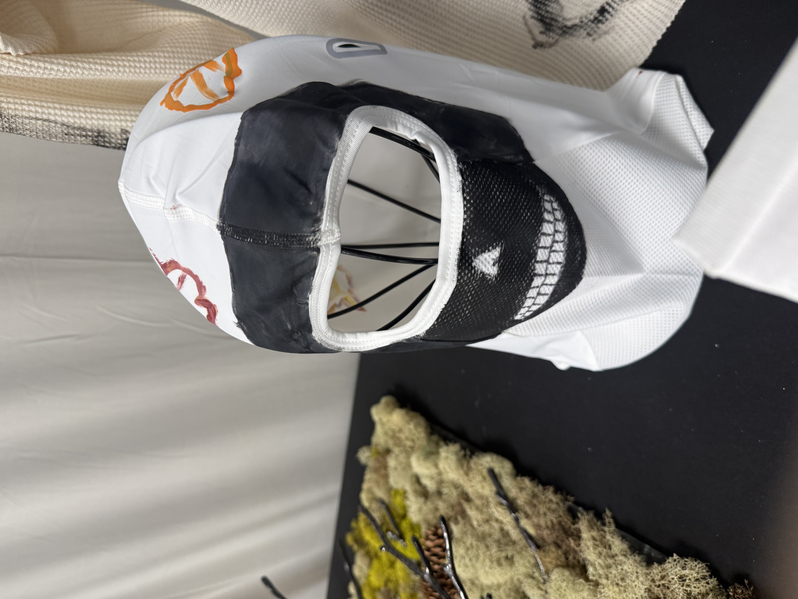

Balaclava Piece
The White Skull Balaclava uses a lighter base with bold skull-like markings. It feels colder and more ghostlike than the black version while still keeping the same mysterious identity.
The white base makes the skull design more visible and striking. The painted areas around the face create the feeling of a mask or skull face.
This piece connects directly to bones, skulls, and winter. The white color makes the design feel closer to actual bone, while the darker details add contrast.
The white balaclava adds contrast to the collection. It gives the brand a brighter but still eerie piece that works with both sweaters.
← Back to Collection